Tate Heath's Lifelong Bucket List
I love to travel and explore new places. Here are some of the destinations I hope to visit and life experiences I hope to have:
Places I Want to Visit
-
Ukraine
- I served my mission in Poland, Ukrainian-speaking, so I would love to finally be able to go to the home country of all the people I served.
-
Australia
- My wife served her mission there, so I would love to see the places and people she served.
-
Japan
- I've heard the food here is incredible! Plus, it's a completely different culture than what I've experienced before.
-
Italy
- I want to visit Rome and try some authentic Italian cuisine.
-
New Zealand
- For the stunning landscapes and outdoor adventures.
-
Greece
- To explore ancient ruins and beautiful islands. I also want to sail the same journey that Paul took when he served his missions.
-
Tanzania
- For the wildlife and natural beauty. I have a dream of climbing Mt. Kilimanjaro one day.
Video About Mt. Kilimanjaro
- For the wildlife and natural beauty. I have a dream of climbing Mt. Kilimanjaro one day.
Experiences I Hope to Have
-
Backpack through Europe
- I've always wanted to see the many different cultures, historical sites, and beautiful landscapes that Europe has to offer.
-
Go on a safari
- Since I was a kid, it's been my dream to see wild animals in their natural habitat and experience the beauty of nature up close, especially animals as big and majestic as elephants and lions.
-
Scuba dive with sharks
- It seems like one of the most thrilling and exhilarating experiences out there, and I would love to see these incredible creatures up close in their natural environment.
-
Visit all 7 continents
- I love learning about different cultures and environments, so I want to experience the unique beauty and diversity of each continent.
-
Visit Machu Picchu
- The ancient Incan city is one of the natural wonders of the world, and I would love to see it in person and learn about its history and significance.
Bucket List Items I've Already Checked Off
-
Go on a riverboat cruise through the Amazon Rainforest on the Amazon River
- I met my wife while on a humanitarian trip in Brazil. We helped build an elementary school, and we also went on a riverboat cruise on the Amazon River for three days.
-
Go skydiving
- My now wife and I went skydiving together before I left on my mission. It was an exhilarating experience.
Skydiving Before the Mission
- My now wife and I went skydiving together before I left on my mission. It was an exhilarating experience.
Adventure Gallery
See the gallery below of my adventures checking off bucket list items with the love of my life.
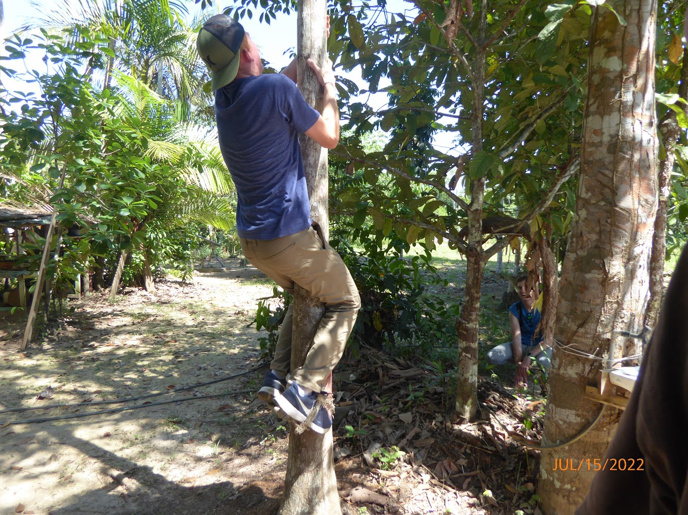
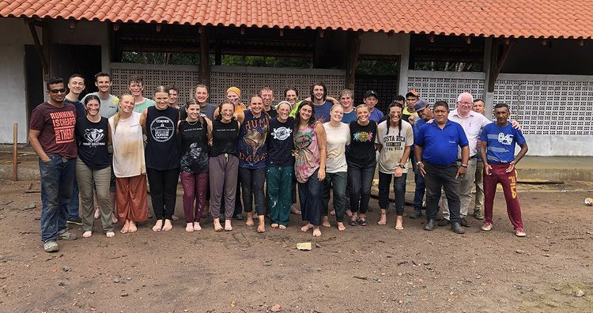
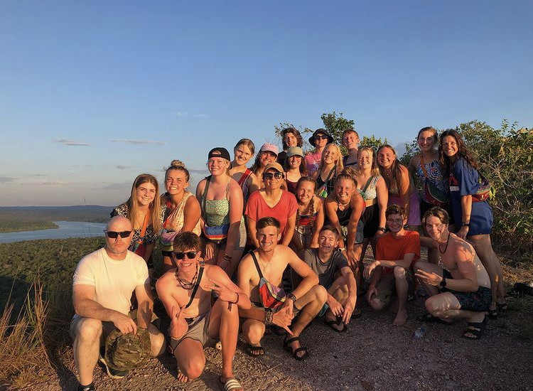
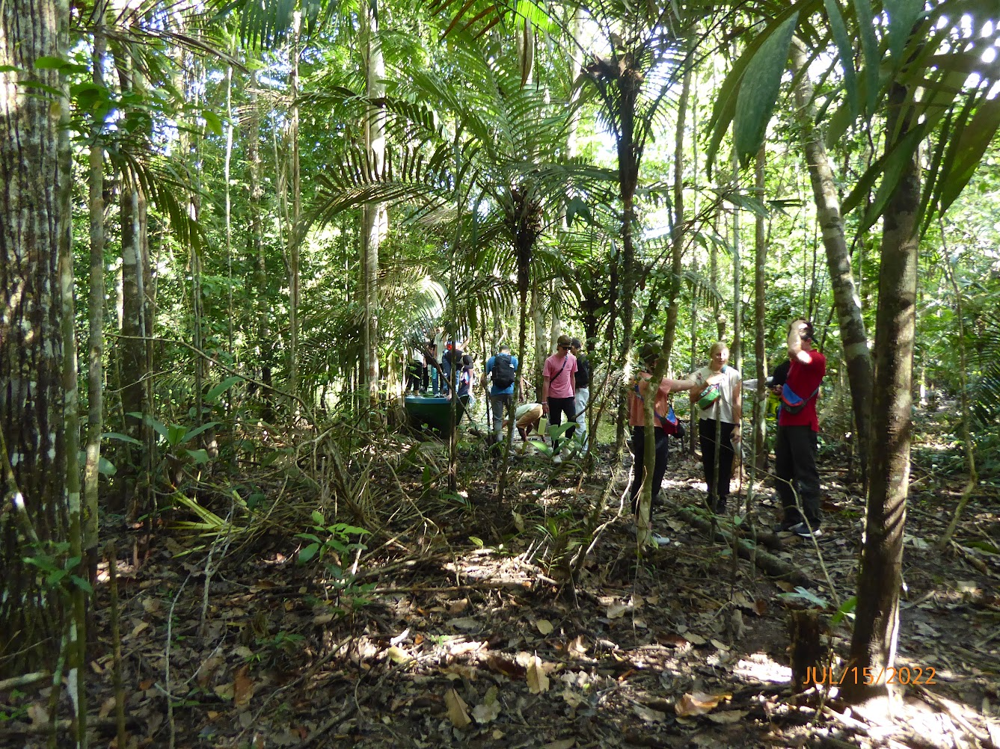
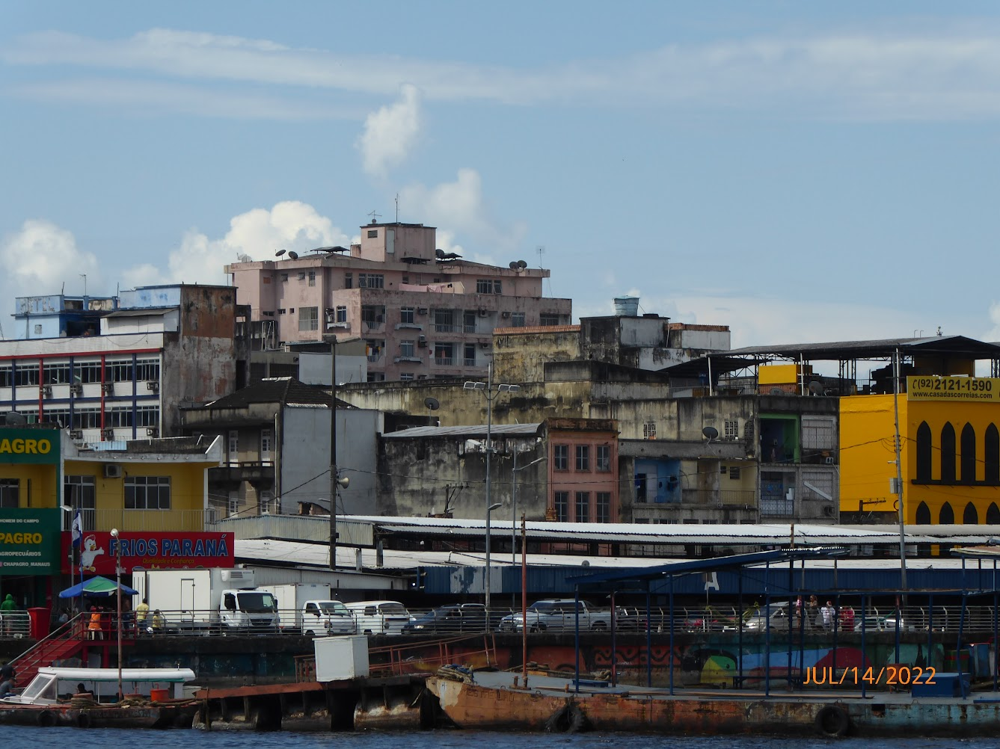
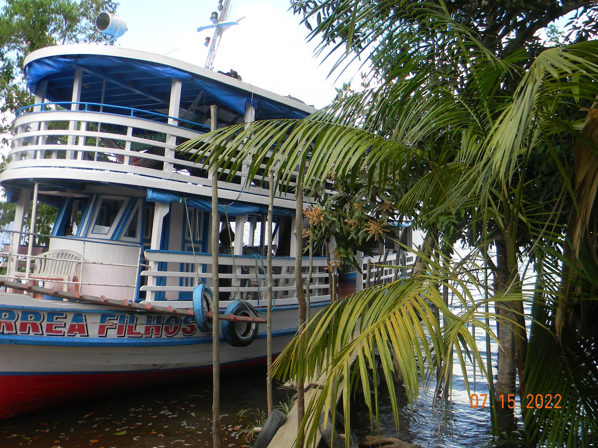
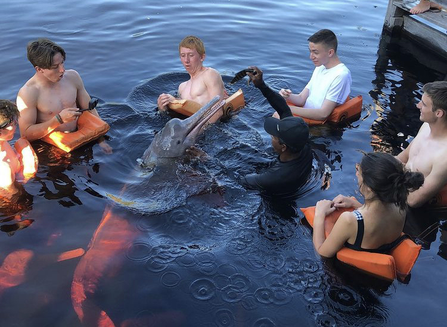
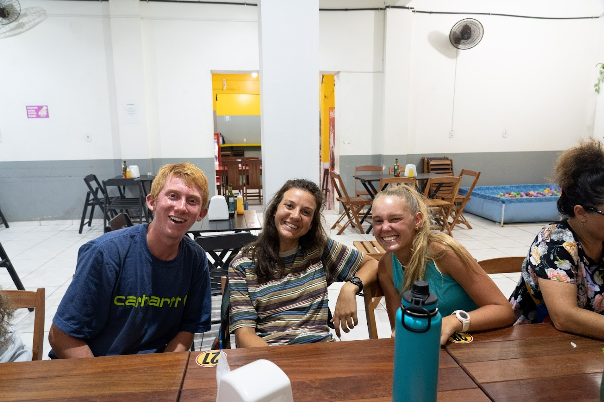
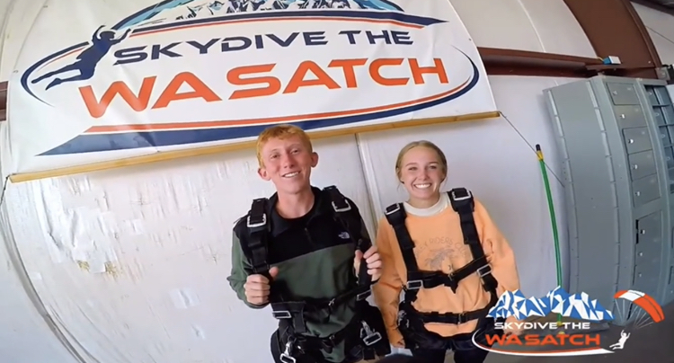
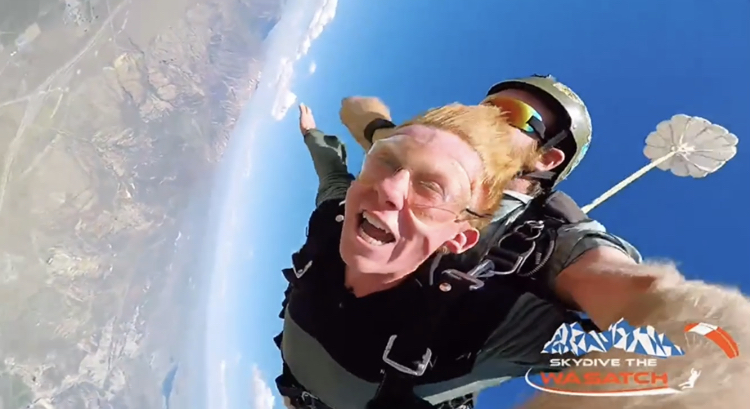
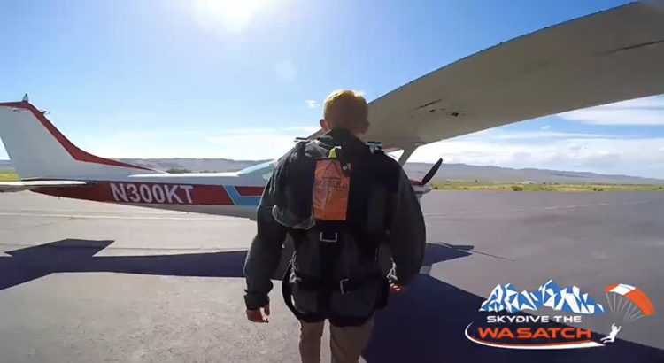